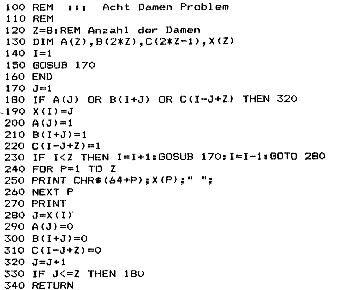

Nascom Journal |
Mai 1982 · Ausgabe 5 |
Am Beispiel des Acht Damen Problems soll einmal auf die verschiedenen Konzepte einiger Programmiersprachen, die auf dem Nascom laufen, eingegangen werden.
Die älteste problemorientierte Sprache ist Fortran ( FORmula TRANslation ). Sie wurde 1954 von J. Backus entworfen und dann in mehreren Versionen weiter entwickelt. Zu diesem Zeitpunkt war die Kommunikation zwischen dem Bediener und der Maschine noch recht mühsam. Die Eingabe erfolgte über Lochstreifen oder Lochkarten, die Ausgabe über eine Schreibmaschine oder einen Drucker. Für jede Programmzeile mußte eine Lochkarte gestanzt werden (‚Backspace‘ war d nur ein schöner Traum). Der Bezug auf die Lochkarte äußert sich immer noch in dem zwingenden Aufbau einer Zeile. Sie umfaßt 80 Stellen. Warum haben Terminals und Drucker wohl eine Zeilenlänge von 80 Zeichen? Die letzten acht Stellen dienen dabei nur zur Information des Programmierers, z.B. fortlaufende Numerierung der Karten. Ein INSERT oder DELETE machte man rein manuell. Die ersten 5 Stellen können ein Label enthalten, eine Zeilennumerierung ist nicht erforderlich. Ist der eigentliche Befehlsteil länger als 66 Zeichen, wird auf der nächsten Karte in der 6. Stelle ein Fortsetzungszeichen gesetzt.
Die Sprache war hauptsächlich für die Lösung mathematischer Probleme gedacht. Daraus erklärt sich die stiefmütterliche Behandlung bei der Bearbeitung von Texten und die die umständliche Formatierung bei der Ausgabe. Flexible ist dagegen die Möglichket über eine externe Bibliothek mathematische Routinen, die bereits früher einmal geschrieben wurden, in ein Programm einzubinden.
Die Fortranversion von Microsoft, die auf dem Nascom mit CLD-DOS läuft, ist ein echter Compiler, d.h. aus dem Quellcode wird über 2 Stufen reiner Maschinencode erzeugt. Dieser kann ausgeführt werden, ohne daß dabei im Rechner andere Hilfsprogramme – außer dem DOS – im Rechner präsent sein müssen.
In der 1. Stufe wird durch den Compiler ein relocierbarer Code erzeugt. In der 2. Stufe werden dann durch den Linker Routinen, die in der Library enthalten sind, angebunden und ausführbare Z80 (bzw. 8080) Codes generiert. Allerdings ist die Länge des fertigen Programms relativ groß. Im Nascom Journal 3/80 hat Herr L.Bayer eine Lösung des Acht Damen Problems in Maschinensprache vorgestellt, die nur 1/4 K Speicher belegt. Die Fortran Version dagegen belegt fast 8 K.
Obwohl Basic als reine Interpretersprache konzipiert ist, wird bei den Microsoft Dialekten ein komprimierter Zwischencode erzeugt, also teilweise compiliert. Dabei wird jeweils ein Befehl zu einem 1 Byte „Token“ zusammengefaßt. Kennzeichen eines „Tokens“ ist das gesetzte 8. Bit.
Die Verwandtschaft zum Fortran zeigt sich in den GOTO Befehlen, die Sprünge auf ein Label (Zeilennummer) zulassen. Da bei Fortran definitionsgemäß alle Variablen, die mit den Buchstaben I bis N beginnen, als Integer behandelt werden, hat sich als Schleifenzähler die Variable I eingebürgert. Schaut man sich fertige Basic Programme an, so stellt man fest, daß als Schleifenzähler meist auch hier I benutzt wird. Der Mensch ist halt ein Gewohnheitstier.
Über die Vor- und Nachteile von Basic ist schon genug geschrieben worden. Die Sprache ist leicht zu erlernen, komplexe Programme dagegen sind schwer zu lesen und zu warten. Als Interpretersprache ist Basic natürlich relativ langsam.
Das Acht Damen Problem läßt sich bei dem Beispielprogramm auch für größere Felder lösen. Es ist dabei lediglich Zeile 120 zu ändern.
Das Pascalsystem besteht aus zwei Teilen. Durch den Compiler wird aus dem Quelltext ein kompakter Zwischencode, der P-Code, erzeugt. Dieser Code gilt für einen hypothetischen Stackrechner. Das Prizip dazu ist ähnlich wie bei der Programmsprache FORTH. Die Microengine von Western Digital kann einen solchen Code (aber auch nur diesen) direkt ausführen. Microcomputer wie der Nascom müssen den P-Code über einen Interpreter umsetzen. Für andere Rechner gibt es auch Pascal Compiler (z.B. Pascal/M), die Maschinencode erzeugen. Allerdings ist hier der Speicherbedarf viel größer, was die Programmlänge sehr einschränkt.
Bei meinem Pascal besteht jeder P-Code aus 4 Bytes. Es gibt auch andere Konzepte, die Interpretation ist dann aber aufwendiger. Das 1. Byte enthält den OP-Code, die restlichen 3 entweder Bedingungen, Zeiger auf Adressen oder auch Konstante.
Die Laufzeiten für die Beispielprogramme lassen deutlich werden, wie die Sprachen aufgebaut sind. Der Maschinencode des Fortranprogramms wird in 60 Sekunden ausgeführt, die Interpretation des P-Codes beim Pascal dauert nur 15 Sekunden länger. Die zeilenweise Bearbeitung durch den Basicinterpreter beansprucht dagegen fast 20 Minuten.

| Seite 19 von 32 |
|---|